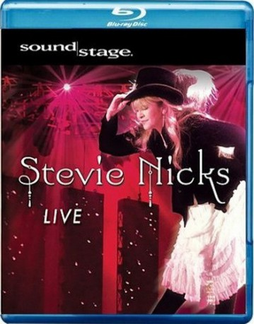

#6819 Stevie Nicks Live Soundstage
 
 IMDB-Wertung: 0.0 / 10
IMDB-Wertung: 0.0 / 10  Metascore: 0
Metascore: 0 
01. Stand Back
02. Enchanted
03. If Anyone Falles In Love
04. Rhiannon
05. Crash Into Me
06. Sorcerer
07. The One
08. Gold Dust Woman
09. I Need to Know
10. Circle Dance
11. Landslide
12. Sara
13. Fall From Grace
14. How Still My Love
15. Edge of Seventeen
16. Rock and Roll
Jahr: 2008
Dauer: 106 Minuten
FSK: 0
Land: Studio: Tonspuren:
Untertitel:
Auflösung: 720p (1280x720) Größe: 5447 MB
Genre: Musik
Regisseur:
Drehbuch:
Soundtrack:
Darsteller:
Datei: X:\Musik\Stevie Nicks Live Soundstage (2008, FSK0, 1280x720).mkv seit 30.08.2017
Festplatte: HD Serien(SU-Z)+Dokus+Musik
 Es gibt insgesamt 134 Filme in der Gruppe 'Musik'
Es gibt insgesamt 134 Filme in der Gruppe 'Musik'